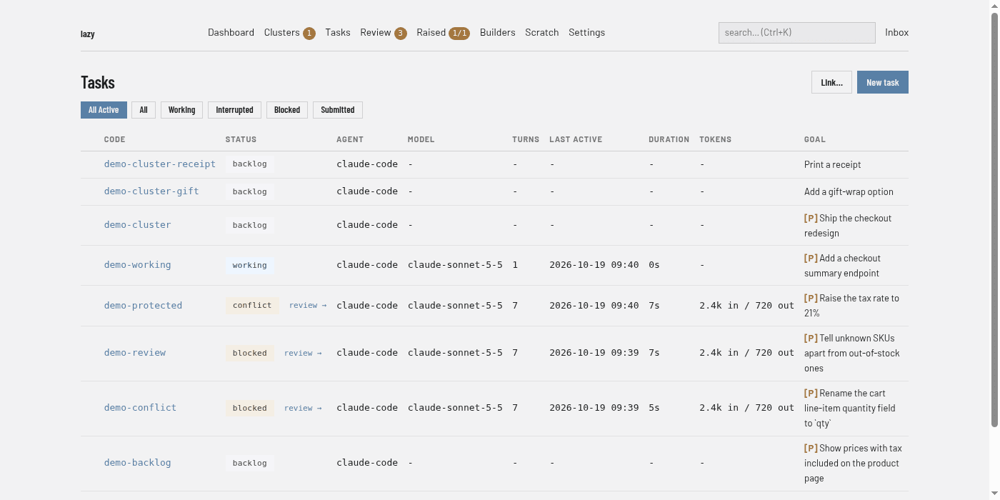

Protected branches and human approvals
Branch protection flips the builder's default on sensitive merges from "accept unless told not to" to "cannot accept without a deliberate human act." It is friction, not security: the builder is an over-eager cooperator, not an adversary. Treat it as a speed bump that makes an unreviewed merge require a deliberate act, not as a boundary that would hold against one.
Turning it on: one command, zero branch listing
Protection is opt-in — OFF by default (except in Lazy Teams, where it
is on by default). A project with no [protection]
section (or with enabled = false) has no protection at all: accepts into
main are not gated.
One command turns it on:
lazy protect main on
That both lists main in [protection].protected_branches and sets
enabled = true (it says so when it does). From then on, accepting any task
into main prompts for the approval passphrase at lazy accept itself — or
is satisfied by an approval on the task's PR/MR, which is the same gate.
The equivalent by hand, which needs no branch listing at all because the repo's default branch is protected as soon as the switch is on:
[protection]
enabled = true # protects the repo's default branch; set false (or delete) to turn off
Toggling enabled off and on again loses nothing: the rest of the section is
kept, it just has no effect while disabled. lazy protect <target> off never
touches the switch — unprotecting one branch is not the same act as turning
the feature off.
How you find out it exists
Since protection is off by default, lazy accept advertises it: after an
accept succeeds into the repo's default branch, it prints one line —
Tip: gate future accepts into `main` behind a human approval — lazy protect main on
The tip is suppressed once you have expressed an opinion: writing enabled
into [protection] (either value) stops it for good, as does having protection
on. An explicit enabled = false means you know about the feature and said no,
so lazy stops mentioning it.
Seeing a gate before it bites
Protection is friction, and friction you meet for the first time as a refusal is just a surprise. Once a project protects anything, every read surface says so — before you try to accept.
| Surface | What you see |
|---|---|
| Web dashboard | a [P] badge on the task list (the marker the CLI lists use too), and a Protected row on the task detail page |
lazy show <task> |
a Protected: line — yes (branch gate), yes (task gate), or yes (task gate + branch gate) — followed by what each gate is, how to accept, and whether a builder review is waiting |
lazy status <task> |
the same Protected: line, in the same words |
lazy list / lazy active / lazy blocked |
a compact [P] marker on the goal, plus a one-line legend under the table |
lazy browse <task> |
the gate in the header line (and above the hunks under -i), so you learn about it before you press a |
MCP lazy_show |
a protection object — gated, target_branch, task_gate, branch_gate, pending_review, markers, summary |
On the dashboard, with main protected, every task that targets it carries the [P] badge in front of its goal:

Two properties are deliberate:
- Additive only. A project that protects nothing shows no marker, no legend and no
Protected:line. Markers sit in the last column so no fixed-width column shifts, and they are ASCII ([P], not a shield emoji, whose width varies by terminal) so scripts can grep them. - Read-only. These surfaces report gates; they never arrange them. There is
no MCP write surface for
lazy protect, and no MCP route to a protected merge at all — see surface-asymmetries.md. The builder can plan around a gate without being able to open it.
A task you listed in protected_tasks while enabled = false gets no marker —
it gates nothing — but lazy show still reports it, as no — listed in [protection].protected_tasks, but protection is disabled. Silence there would
leave you believing a gate was armed when it was not.
What a protected accept looks like
With protection on, lazy accept of a task targeting a protected branch
prompts for the approval passphrase and merges in the same invocation:
lazy system passphrase set # once per MACHINE, at your own terminal
lazy accept <task> # prompts, verifies, merges
Approve-then-merge in one step is the point: the approval is inherently bound to the exact commits being merged. There is no stored approval token that could go stale, be recorded before the agent finished, or let a later, different diff through.
- The passphrase lives nowhere in the repository. It is enrolled once per
machine with
lazy system passphrase set, stored as aBun.passwordhash (argon2id) at~/.lazy/passphrase.jsonwith mode0600, and covers every lazy project on that machine. What makes the approval meaningful is that the passphrase is outside the builder's context — never paste it into a conversation with the builder. See the enrollment section. - Accept checks enrollment before it prompts. With nothing enrolled on the
machine, it prints the enrollment instructions and exits non-zero without
asking you to type a secret that could not possibly have matched. The
interactive prompt is a bare
Approval passphrase:— it names no file, because there is no file to read it from. - The prompt is masked — each character you type shows as
*, so the passphrase never reaches the screen, terminal scrollback, or a screen share. Masking needs a real terminal: without one, accept refuses rather than falling back to an echoing prompt. --yesskips accept's other prompts, never the passphrase. The daemon's gate has no parameter that means "skip it", so no flag combination can express an unapproved protected merge.- The MCP
lazy_accepttool refuses protected accepts unconditionally and never issues a confirmation code for them: the two-step confirmation is self-satisfiable by the builder and does not count as authorization for a protected merge (it remains in place for unprotected operations). The refusal is not a dead end — see the next section.
Task-to-task merges (a subtask accepted into its parent's lazy/* branch)
are never protected by default — no friction in the inner loop — and never get
a pull request unless a person asks for one with lazy submit (see
Submitting a subtask for review). Re-entry of a
task already in merging status is exempt — reaching that state already
passed the gate; re-entry only completes the authorized merge.
The builder's review survives the refusal
The reason a builder hands lazy_accept is often a real code review. When
the gate refuses the merge, that review is captured on the task (as
pending_accept_review metadata — review text, it authorizes nothing) and
the refusal says so. Your own lazy accept then:
- prints the review — attributed, e.g.
Review by builder (recorded …)— before the passphrase prompt, so it is part of what you approve; - attaches it to the merge: it lands in the
[Accepted]task comment. Your--reason(or typed reason) comes first, then the attributed review. It is not written to the PR — lazy posts no reviews or comments to a forge.
A review recorded before later commits is kept and labeled stale
(recorded before N later commit(s)), never silently dropped — and a builder
retrying lazy_accept with an updated reason replaces its earlier review
rather than stacking copies.
CI and scripting
There is deliberately no non-interactive path for the passphrase: no
flag, no env var, and no stdin route (stdin to lazy accept is the accept
reason). A value a script can supply is a value that sits in shell history,
CI logs, and agent transcripts — which breaks the one property the mechanism
must keep: the token originates outside the builder's context. For automation
on forge projects, approve the PR/MR instead; that satisfies the same gate.
Approving the PR/MR counts
On a GitHub or GitLab project, approving the task's PR/MR satisfies the same gate — no passphrase asked. Clicking "Approve" while reading the diff is the same deliberate human act, expressed where you were already reviewing; demanding the passphrase on top would be friction with no extra judgement behind it.
The two are one mechanism, not two: the forge approval is resolved inside the same gate, so a local-driver project and a forge project reach the identical decision. Details that follow from that:
- The forge is checked first, so an accept of an already-approved PR merges without prompting you for a passphrase you don't need to type.
- The check fails closed: if the forge cannot be reached, the gate stays shut and the passphrase prompt is the offline path.
- A refusal on a forge project names both routes; on a
localproject it names only the terminal route, because there is no PR to approve.
In Lazy Teams: pressing Accept is the approval
Lazy Teams has no passphrase. Everyone there has already signed in, so a protected merge is approved by a signed-in member pressing Accept on the task's Accept page. The page says the merge is protected before you confirm, and the accepted task records who approved it ("Protected merge approved by … (Accept in Lazy Teams)").
Protection is on by default in Lazy Teams. A Teams project's default
branch is protected unless its configuration says otherwise. The protected accept is
one button press for a person, and what it stops is the builder and agents
merging into the default branch on their own. Merges into a parent task's
branch are not affected. With protection on, only team admins may push the
default branch straight to a repository Lazy Teams hosts. To turn it off, a project owner sets Protection
on to off on the project's Configuration page ([protection] enabled = false).
What counts and what does not:
- Counts: a member's own Accept in the browser.
- Does not count: the builder, any task agent, or anything over MCP. They are refused exactly as on a laptop.
- Does not count:
lazy acceptfrom a clone bound to Lazy Teams. It runs on your laptop with your member token, and any program you start there could run it too, including an agent or a builder. So a bound clone cannot claim to be your Accept. Use the Accept button instead. - Does not count: an administrator acting as another member. That is not the member's own approval, so accepting is not offered while acting as someone else.
Approving the task's PR/MR on a forge still satisfies the gate in Teams, as everywhere else.
Enrolling the passphrase: lazy system passphrase
lazy system passphrase set # enroll or rotate (asks twice; rotation asks for the current one)
lazy system passphrase status # is this machine enrolled? never prints or hints at the value
lazy system passphrase delete # un-enroll (asks for the current passphrase first)
One enrollment per machine, not per project. Keying the credential to a
project would need a stable project identity, and the only identity available
is the path — which changes the moment the repo is cloned, moved, or opened
from a worktree. A passphrase that silently stops working after git clone is
worse than one shared across your projects, and the passphrase is friction
(proof a human is at the keyboard), not a per-repo secret.
Stored hashed, outside every repository. ~/.lazy/passphrase.json holds a
Bun.password hash (argon2id) and mode 0600 — never the passphrase. It sits
one level above ~/.lazy/daemon/, so moving the daemon's directory
cannot relocate your credential out from under
you. lazy refuses — not warns — to use a store that is group- or
world-readable, and tells you the chmod to fix it: a hash other accounts can
read is a hash they can attack offline while you believe the gate is intact.
There is no recovery — reset instead. The store holds a hash, so a
forgotten passphrase cannot be read back, and both rotation (set) and
delete ask for the current one. The way back is to remove the store yourself
and enroll again:
rm ~/.lazy/passphrase.json # the file `lazy system passphrase status` names
lazy system passphrase set # enroll a new one, at your terminal
That is a plain local file only your account can write, and removing it resets
the passphrase and nothing else — protection settings, tasks and branches are
untouched. Until you re-enroll, protected merges fail closed: lazy accept
refuses and points back at lazy system passphrase set rather than letting the
merge through.
Three deliberate restrictions, each load-bearing:
- TTY only. No flag, no env var, no piped stdin — same reasoning as CI and scripting above.
- No daemon, no MCP tool. Enrollment writes from the CLI process on your host; verification stays daemon-side. If enrollment went through the daemon, anything that can reach the daemon could enroll a new passphrase and then satisfy its own gate.
- Refuses inside a container. A task agent's container is not your terminal, and the command exists for your terminal.
What this does not close
Rotation requires the current passphrase, and the passphrase cannot be read back (only a hash is stored). The command refuses outright inside a task container.
Advanced: protecting additional branches
For projects with more than one sensitive branch, protected_branches adds
to the automatic default-branch protection (exact names, no globs):
[protection]
protected_branches = ["release"]
gate_default_branch = false switches off the automatic default-branch
protection, leaving only the explicit list. See the [protection] reference
in lazy-toml.md.
The default branch is an implicit entry
The default branch is gated without appearing in protected_branches — it
is resolved from the remote (refs/remotes/<remote>/HEAD) at decision time, so
it stays correct if the repo's default branch ever changes. Because nobody
typed it into a list, it is surfaced everywhere the list is:
lazy protectshows it under Protected branches, marked(implicit — gate_default_branch).lazy protect <default-branch> offdoes not claim it is unprotected — it says what actually protects it and thatgate_default_branch = falseis the key that lifts it. (Listing it explicitly is still allowed and is saved: the entry outlives a latergate_default_branch = false.)lazy doctorwarns when that remote ref is missing, because resolution then falls back to the literalmain— on amasterrepo, a gate you believe is armed would protect nothing. The fix it names isgit remote set-head <remote> --auto.
Protected tasks: gating work on the way OUT
A protected branch gates merges coming in. A protected task gates
one task's work going out: merging its branch upward requires approval
regardless of the target — including into a lazy/* parent branch, which
is otherwise never gated.
Use it when a particular piece of work is the sensitive thing, wherever it lands: a risky refactor, a task you want to read yourself before it moves anywhere, a long-running task that accumulates subtask work freely but must not be promoted without you.
Tasks are listed by code or short id, not by branch — the branch is resolved from the task at decision time, so it stays correct:
[protection]
protected_tasks = ["add-auth"]
The refusal names the task and, as always, the passphrase prompt at
lazy accept <task>.
Stale entries fail open — loudly
A listed task that no longer resolves to a branch — deleted, code changed, identifier now ambiguous, or simply never started — gates nothing. It fails open rather than blocking every accept on a config typo.
That is the dangerous half of the trade: you believe a gate is armed when it is not. So a stale entry is made loud in three places:
- the accept path warns on every gated accept
lazy doctorreports it, naming each stale code and its fix (lazy protect <code> off) — report-only, never a hard failurelazy protectshows it as stale in the listing
The lazy protect command
lazy protect is the single CLI for all of the above. It edits the
[protection] section of lazy.toml in place — there is one store, and
you can always read or hand-edit it.
lazy protect # Show the current protection state
lazy protect release on # Protect merges INTO branch 'release'
lazy protect add-auth on # Protect merges OUT OF task 'add-auth'
lazy protect add-auth off # Lift that task gate
lazy protect --branch main off # Stop protecting the 'main' branch
- The target resolves as a task code or short id first, then as a branch
name — you think in tasks more often than in branches. When it matches
both, the command says so and takes the task;
--branch/--tasksettle it explicitly. - Turning a target on also sets
enabled = truewhen the switch is off, and says so. Protection is opt-in, so a bare list edit would otherwise be inert — you would believe you had gated a branch when you had not. - Turning a target off never touches the switch. While protection is
disabled such an edit is still saved (losing your change would be worse than
a no-op) but warns that it has no effect yet.
lazy doctorflags the same combination: gate keys configured while the switch is off. - There is deliberately no MCP equivalent for writing: the builder must not manage its own gates, for the same reason it cannot complete a protected merge. Reading the state is harmless.
What the config editing does and does not preserve
lazy protect edits lazy.toml as text rather than reparsing and
re-serializing it, so comments, blank lines, key order and quoting style
survive. Known limitations:
- A replaced multi-line array collapses to a single line. Comments inside that array's brackets are lost; comments above and below are not.
- Removing the last entry writes an explicit
protected_branches = []rather than deleting the key — "nothing is protected" said out loud. - The dotted form (
protection.protected_branches = [...]) and an inline table (protection = { ... }) are rejected with an error rather than edited, since rewriting them safely is not possible at the text level. Convert to a[protection]section and re-run.
Mechanics
The approval is checked against the passphrase you enrolled on this machine.
Before prompting, lazy accept asks the daemon whether a passphrase is enrolled
at all, so an accept that could never succeed is refused up front instead of
after you type. That check is answered by the same project the merge runs in.
A forge PR approval is an additional way to satisfy the same check, not a separate mechanism — see Approving the PR/MR counts above.
A separate gate on the same path
The deleted-file resurrection guard sits immediately
after this one in the accept path and refuses a merge that would silently put
back a file the target branch deleted. It is unrelated to protection — always
on, no config, and it asks about the content of the merge rather than about
who is allowed to make it — but it shares the enforcement point and the
--approve-file approval channel.
What this does NOT do
Deliberate non-goals: no threat model against a hostile builder, no push-prevention, no cryptographic hardening or rate limiting. The feature succeeds if it changes the default path from auto-accept to human-approved.
Submitting a subtask for review
Lazy does not open a pull or merge request for a subtask on its own: its work
goes into the parent task's branch, and lazy accept merges it there locally.
If a reviewer wants to look at a subtask on your forge anyway, ask for it:
lazy submit <subtask>
This opens the PR/MR with the parent task's branch as its base and marks the
subtask submitted, so PR comments reach it like any submitted task. A few
things to know:
- The parent's branch must already be on the remote. Lazy pushes a task's branch after each of its turns, so it normally is. If it is not, submit says so and stops; it never pushes the parent for you. Wait for the parent's turn to end, or push it yourself, and submit again.
- A pull request you opened by hand is adopted. If the subtask's branch already has an open PR/MR, submit records that one instead of opening a second — as long as it targets the parent's branch. If it targets something else, submit tells you to change its base or close it.
- Accepting still merges locally, into the parent's branch, and then lazy closes the PR/MR, since the work has landed. If the reviewer merges it on the forge instead, lazy notices and completes the subtask.
- If the parent is accepted first, the pull request moves with the subtask.
Accepting (or closing) the parent re-parents the subtask onto the parent's
own target, and lazy changes the pull request's base to match. If the forge
will not allow that, lazy closes the pull request and puts the subtask back
to
blockedso you can submit it again.lazy reparentdoes the same. - A pull request is never merged into the wrong branch. If a subtask's pull
request still targets a branch the subtask no longer integrates into — for
example because someone changed it by hand —
lazy acceptrefuses until the base is fixed, and a merge done on the forge into that branch does not mark the subtask complete; lazy raises an alert instead. - Agents cannot do this. The
lazy_submitagent tool keeps refusing a subtask; the request has to come from a person.